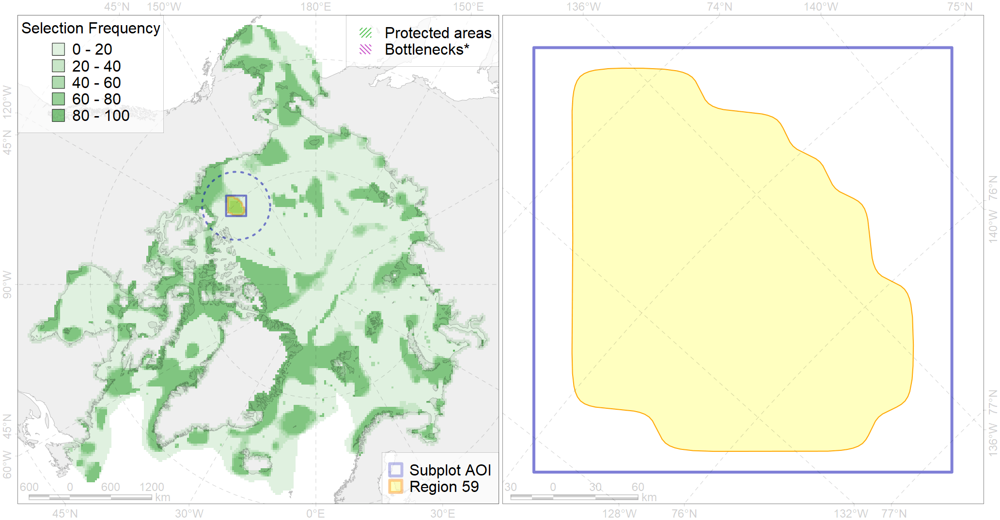

Region 59
Region 59
“ArcNet” scenario 33 achievement for region 59.
Use Accenter for advanced mode.

0
CFs inside of Region completely
0
CFs inside of Region at quarter
0
Complete-targets achievement by Region
3
Half-targets achievement by Region
| CF | Name | Target Achievement for Region | Proportion of Target Achievement in Region | Amount Proportion in Region |
|---|---|---|---|---|
| 7179 | VII.3. Makarov and Canada Basin VII.3.1. Rises (slope foot) | 50.9% | 43.2% | 15.7% |
| 3050 | Multiyear Ice distribution in September in the Beaufort Sea LME | 68.8% | 45.0% | 14.5% |
| 7141 | III.1.2.2. Archipelago north slope canyons | 89.0% | 36.5% | 11.7% |
| 7183 | VII.3.5. Deep parts of canyons (below slope) | 42.6% | 30.5% | 10.8% |
| 5020 | Beluga of the Eastern Chukchi Sea summer distribution | 19.2% | 19.2% | 10.2% |
| 5015 | Beluga of the Eastern Beaufort Sea winter distribution | 15.6% | 15.5% | 8.8% |
| 5117 | 5117 Beluga EChukchi Sea autumn core | 30.3% | 17.6% | 8.5% |
| 7023 | Canada Basin abyssal region | 46.5% | 45.0% | 4.4% |
| 7180 | VII.3.2. Abyssal plains | 29.5% | 29.1% | 2.3% |
| 9014 | polar bear of the NB (Northern Beaufort Sea) subpopulation distribution | 5.9% | 4.9% | 2.3% |
| 3032 | Marginal Ice Zone distribution in July in the Beaufort Sea LME | 7.3% | 6.9% | 2.1% |
| 7182 | VII.3.4. Abyssal mountains | 9.8% | 7.6% | 1.8% |
| 7181 | VII.3.3. Abyssal hills | 22.0% | 10.6% | 1.8% |
| 7022 | Canada - North Greenland bathyal region | 13.9% | 2.5% | 1.5% |
| 3031 | Marginal Ice Zone distribution in July in the Central Arctic LME | 4.0% | 3.9% | 1.2% |
| 7140 | III.1.2.1. Archipelago north slope | 8.1% | 2.0% | 1.1% |
| 4079 | Fish zoogeography, Arctic Region, Arctic Abyssal Province (11A -Scandian, 11B - Central-Arctic and 11C - Baffin Deep-sea Districts ) | 19.3% | 3.3% | 0.9% |
| 4096 | Range of the Glacial eelpout (Lycodes frigidus) | 12.8% | 3.3% | 0.9% |
| 2061 | Ringed seal circumpolar foraging areas as predicted by MIZ distribution | 1.0% | 0.5% | 0.4% |
| 4041 | Range of the Polar Cod (Boreogadus saida) (F35) | 2.4% | 0.9% | 0.3% |
| 3049 | Multiyear Ice distribution in September in the Central Arctic LME | 1.0% | 1.0% | 0.2% |
| 4037 | Distribution of the Glacial cod (Arctogadus glacialis) (F34) | 0.2% | 0.1% | 0.0% |
| 4074 | Fish zoogeography, Arctic Region, High-Arctic Shelf Province, Canadian-Greenland District (10A) | 0.2% | 0.0% | 0.0% |
| 2005 | Bearded seal whelping areas in the Beaufort Sea | 0.1% | 0.0% | 0.0% |
| 5112 | Arctic Cetaceans (beluga, bowhead, narwhal) winter habitats as predicterd by MIZ | 0.0% | 0.0% | 0.0% |
| 7134 | III.1.1. 1. Canadian Arctic Archipelago shelf | 0.0% | 0.0% | 0.0% |
| 7133 | III.1. Canadian Arctic Archipelago shelf and margin | 0.0% | 0.0% | 0.0% |